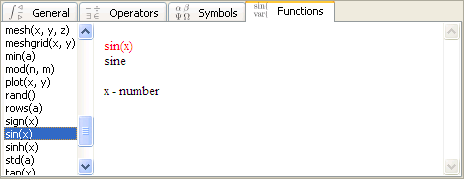

Table of contents
Natural input
Toolbar input
General
Operators
Symbols
Functions
Copy TeX to Wiki
Create pdf from TeX
Note on file encoding
Back to Index
Natural Input
Natural input aims to allow formula input in the same
way as it would be done in text mode, in an attempt to
achieve maximum effectiveness of input.

Type the formula using characters, numbers and symbols.
Use [Home], [End], [Up], [Down], [<-], [->] cursor keys.
| * / + - | operators |
|
|
| \ | for fraction |
| ^ | for power |
| _ | for subscript |
|
|
| { | insert empty array |
| [ | insert empty vector |
|
|
| [F1] | for general toolbar |
| [F2] | for operator toolbar |
| [F3] | for symbol toolbar |
| [F4] | for function toolbar |
|
|
| [Backspace] | remove content before cursor |
| [Delete] | remove content after cursor |
|
|
| [Enter] | to evaluate expression |
| [Up], [Down] | to select a formula |
Toolbar Input
Toolbar input represents opposite concept to natural input.
It aims to allow the most intuitive, though still comfortable
input for less experienced users and children.
General
Toolbar is activated by [F1]. Use cursor keys and
[Enter] to select symbol. Press [F1] for next tab.
 | ^n - power |
 | sqrt(x) - square root |
 | nthroot(x, n) - nth root |
 | factorial(x) - n factorial |
Functions that follow are meta functions. These are math
functions, that are not easily expressible in terms of octave
vocabulary. These are emulated by combining multiple
octave commands or defining new runtime functions.
 | _i - subscript |
 | frac(x, y) - fraction |
 | sum(v, fm, to, x) - sum |
 | prod(v, fm, to, x) - product |
 | int(fm, to, x, v) - numerical integration / quadrature |
 | nint(x, v) - integration - no implementation - TeX only |
 | lim(v, to, x) - limit of function - no implementation - TeX only |
 | function(name, v, x) - math function definition |
Functions shown blue have no implementation - to be used with TeX only.
Operators
Toolbar is activated by [F2]. Use cursor keys and
[Enter] to select symbol. Press [F1] for next tab.
 a-b a-b |  a<b a<b |  subset [Esc] subset [Esc] |  leftarrow [Esc] leftarrow [Esc] |
 a+b a+b |  a>b a>b |  supset [Esc] supset [Esc] |  rightarrow [Esc] rightarrow [Esc] |
 a*b a*b |  leq [Esc] leq [Esc] |  subseteq [Esc] subseteq [Esc] |  leftrightarrow [Esc] leftrightarrow [Esc] |
 a/b a/b |  geq [Esc] geq [Esc] |  supseteq [Esc] supseteq [Esc] |  notrightarrow [Esc] notrightarrow [Esc] |
 times [Esc] times [Esc] |  ll [Esc] ll [Esc] |  cup [Esc] cup [Esc] |  notleftrightarrow [Esc] notleftrightarrow [Esc] |
 div [Esc] div [Esc] |  gg [Esc] gg [Esc] |  cap [Esc] cap [Esc] |
 a=b a=b |  sim [Esc] sim [Esc] |  in [Esc] in [Esc] |
 ne [Esc] ne [Esc] |  approx [Esc] approx [Esc] |  empty [Esc] empty [Esc] |
 equiv [Esc] equiv [Esc] |  simeq [Esc] simeq [Esc] |  pm [Esc] pm [Esc] |
 neg [Esc] neg [Esc] |  propto [Esc] propto [Esc] |  prime [Esc] prime [Esc] |
Operators shown blue have no implementation - to be used with TeX only.
Symbols
Toolbar is activated by [F3]. Use cursor keys and
[Enter] to select symbol. Press [F1] for next tab.
 inf [Esc] inf [Esc] |  varth [Esc] varth [Esc] |  sigma [Esc] sigma [Esc] |  Lambda [Esc] Lambda [Esc] |
 ii [Esc] ii [Esc] |  iota [Esc] iota [Esc] |  varsigma [Esc] varsigma [Esc] |  Xi [Esc] Xi [Esc] |
 jj [Esc] jj [Esc] |  kappa [Esc] kappa [Esc] |  tau [Esc] tau [Esc] |  Pi [Esc] Pi [Esc] |
 alpha [Esc] alpha [Esc] |  lambda [Esc] lambda [Esc] |  upsilon [Esc] upsilon [Esc] |  Sigma [Esc] Sigma [Esc] |
 beta [Esc] beta [Esc] |  mu [Esc] mu [Esc] |  phi [Esc] phi [Esc] |  Upsilon [Esc] Upsilon [Esc] |
 gamma [Esc] gamma [Esc] |  nu [Esc] nu [Esc] |  varphi [Esc] varphi [Esc] |  Phi [Esc] Phi [Esc] |
 delta [Esc] delta [Esc] |  xi [Esc] xi [Esc] |  chi [Esc] chi [Esc] |  Psi [Esc] Psi [Esc] |
 epsilon [Esc] epsilon [Esc] |  omicron [Esc] omicron [Esc] |  psi [Esc] psi [Esc] |  Omega [Esc] Omega [Esc] |
 vareps [Esc] vareps [Esc] |  pi [Esc] pi [Esc] |  omega [Esc] omega [Esc] |  nabla [Esc] nabla [Esc] |
 zeta [Esc] zeta [Esc] |  varpi [Esc] varpi [Esc] |  Gamma [Esc] Gamma [Esc] |  hbar [Esc] hbar [Esc] |
 eta [Esc] eta [Esc] |  rho [Esc] rho [Esc] |  Delta [Esc] Delta [Esc] |  ddagger [Esc] ddagger [Esc] |
 theta [Esc] theta [Esc] |  varrho [Esc] varrho [Esc] |  Theta [Esc] Theta [Esc] |  paragraph [Esc] paragraph [Esc] |
Functions
Toolbar is activated by [F4]. Use cursor keys and
[Enter] to select symbol. Press [F1] for first tab.

Functions can also be input from keyboard.
For example sin() can be inserted by typing sin(.
| ln(x) - natural logarithm |
log10(x) - base 10 logarithm |
exp(x) - exponential |
Trigonometric functions
| sin(x) - sine |
cos(x) - cosine |
tan(x) - tangent |
asin(x) - arc sinus |
acos(x) - arc cosine |
atan(x) - arc tangent |
sinh(x) - hyperbolic sine |
cosh(x) - hyperbolic cosine |
tanh(x) - hyperbolic tangent |
asinh(x) - hyperbolic arc sine |
acosh(x) - hyperbolic arc cosine |
atanh(x) - hyperbolic arc tangent |
Statistic functions
| corrcoef(x, y) - correlation coefficient |
cov(x, y) - covariance |
median(a) - median value |
mean(a) - mean value |
std(a) - standard deviation |
var(a) - variance |
cov(a) - covariance |
Matrix Operations
| eye(n, m) - create n by m identity matrix |
transpose(a) - transpose a matrix |
inverse(a) - invert a square matrix |
det(a) - determinant of a matrix |
min(a) - minimum value in a matrix |
max(a) - maximum value in a matrix |
rows(a) - returns number of rows |
columns(a) - returns number of columns |
Graphic Operations
| plot(x, y) - 2D plot |
meshgrid(x, y) - grid for 3D mesh |
mesh(x, y, z) - 3D mesh |
title "s" - title of a figure |
xlabel "s" - x-axis description |
ylabel "s" - y-axis description |
zlabel "s" - z-axis description |
print -deps "s" - print to .eps file |
print -dpng "s" - print to .png file |
figure - new figure |
Miscellaneous Functions
| mod(n, m) - modulo |
floor(x) - round down to whole number |
ceil(x) - round up to next whole number |
abs(x) - absolute value |
sign(x) - sign of x |
gcd(x, y) - greatest common divisor |
lcm(x, y) - least common multiple |
rand() - random number |
Copy TeX to wiki
Wiki servers such as wikipedia.org allows math formulas in TeX format.
To add formula in wiki, copy TeX including the math xml tag:
<math>TeX formula</math>
Create pdf from TeX
Install latex package such as tetex-latex-3.0.
Run following command on exported tex file on the command line:
pdflatex file.tex
Note on file encoding
Mirai Documents are xml documents and use UTF-8 encoding.
LaTeX Documents can be stored either default encoding or UTF-8.
For HTML and Plain Text default system encoding is used.
Encoding can be changed by adding java option to start script.
-Dfile.encoding=UTF-8
List of availabe encodings can be found on following site:
http://java.sun.com/j2se/1.5.0/docs/guide/intl/encoding.doc.html
Back to Index